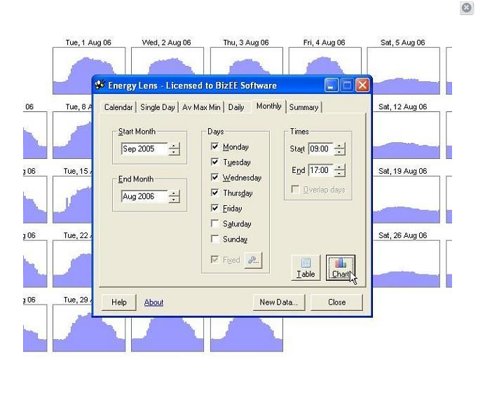

Plataforma Web para Gestão de Energia
Desenvolvimento de uma plataforma intuitiva e robusta para monitoramento, análise e otimização do consumo de energia em edificações e indústrias, visando a eficiência e a sustentabilidade.
Visão Geral do Projeto
Este projeto foca na criação de uma plataforma web completa para gerenciar o consumo de energia de forma inteligente. Nosso objetivo foi capacitar empresas e proprietários a visualizarem seus padrões de consumo, identificarem desperdícios e implementarem estratégias para reduzir custos e o impacto ambiental.
A plataforma integra dados de medidores inteligentes e sensores, oferecendo dashboards personalizáveis, relatórios detalhados e alertas em tempo real. A arquitetura é escalável, suportando desde pequenas empresas até grandes complexos industriais.
Resultados e Impacto
A implementação da Plataforma Web de Gestão de Energia resultou em uma economia média de 18% nos custos de energia para nossos clientes. A visibilidade aprimorada permitiu a identificação de picos de consumo e a otimização de horários de operação de equipamentos, levando a uma redução de 20% nas emissões de carbono associadas ao consumo de energia.
Os usuários relataram maior controle e compreensão sobre seus gastos energéticos, facilitando a tomada de decisões estratégicas para eficiência energética. A interface amigável e os recursos de análise preditiva são altamente valorizados.
Tecnologias Utilizadas
- Frameworks web modernos (e.g., React, Angular, Vue.js para o frontend)
- Backend robusto com APIs RESTful (e.g., Node.js, Python/Django, Ruby on Rails)
- Banco de dados de séries temporais (e.g., InfluxDB) e relacionais (e.g., PostgreSQL)
- Serviços de nuvem para escalabilidade e segurança (e.g., Google Cloud Platform, AWS)
- Ferramentas de visualização de dados (e.g., D3.js, Chart.js)
Desafios Superados
Um desafio significativo foi a integração com uma variedade de sistemas de medição de energia legados e proprietários. Desenvolvemos módulos de adaptadores flexíveis para garantir a compatibilidade e a ingestão de dados de diversas fontes. A garantia da segurança dos dados de consumo, que podem ser sensíveis, foi abordada com criptografia de ponta a ponta e auditorias de segurança regulares.